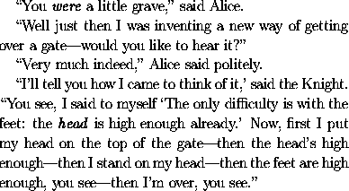
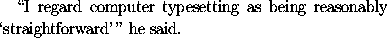

Single quotation marks are produced in LaTeX using
` and '. Double quotation marks are
produced by typing `` and ''. (The
`undirected double quote character " produces
double right quotation marks: it should never be
used where left quotation marks are required.)
LaTeX allows you to produce dashes of various length, known as
`hyphens', `en-dashes' and `em-dashes'. Hyphens are obtained
in LaTeX by typing -, en-dashes by typing -- and
em-dashes by typing ---.
One normally uses en-dashes when specifying a range of numbers. Thus for example, to specify a range of page numbers, one would type
on pages 155--219.
Dashes used for punctuating are often typeset as em-dashes,
especially in older books. These are obtained by typing
---.
The dialogue
(taken from Alice through the Looking Glass, by Lewis Carroll) illustrates the use of quotation marks and dashes. It is obtained in LaTeX from the following input:
``You \emph{were} a little grave,'' said Alice.
``Well just then I was inventing a new way of
getting over a gate---would you like to hear it?''
``Very much indeed,'' Alice said politely.
``I'll tell you how I came to think of it,'' said
the Knight. ``You see, I said to myself `The only
difficulty is with the feet: the \emph{head} is
high enough already.' Now, first I put my head on
the top of the gate---then the head's high
enough---then I stand on my head---then the feet
are high enough, you see---then I'm over, you see.''
Sometimes you need single quotes immediately following double quotes, or vica versa, as in
The way to typeset this correctly in LaTeX is to use the control sequence
\, between the quotation marks,
so as to obtain the necessary amount of separation. The above
example is thus produced with the input
``I regard computer typesetting as being reasonably `straightforward'\,'' he said.